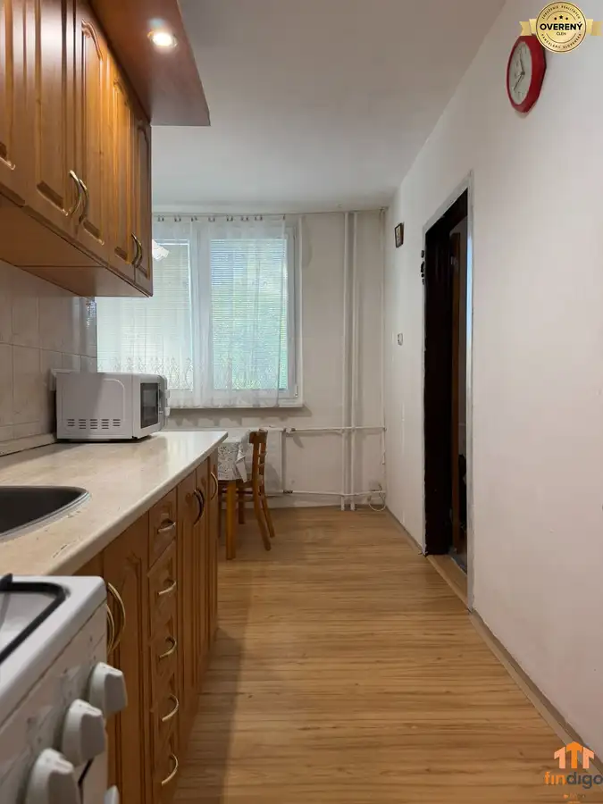
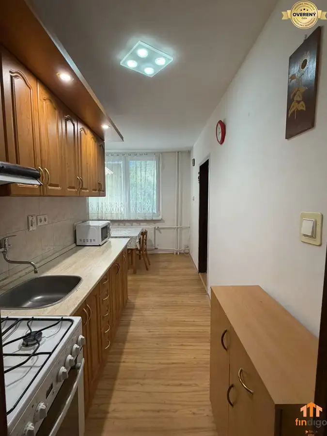
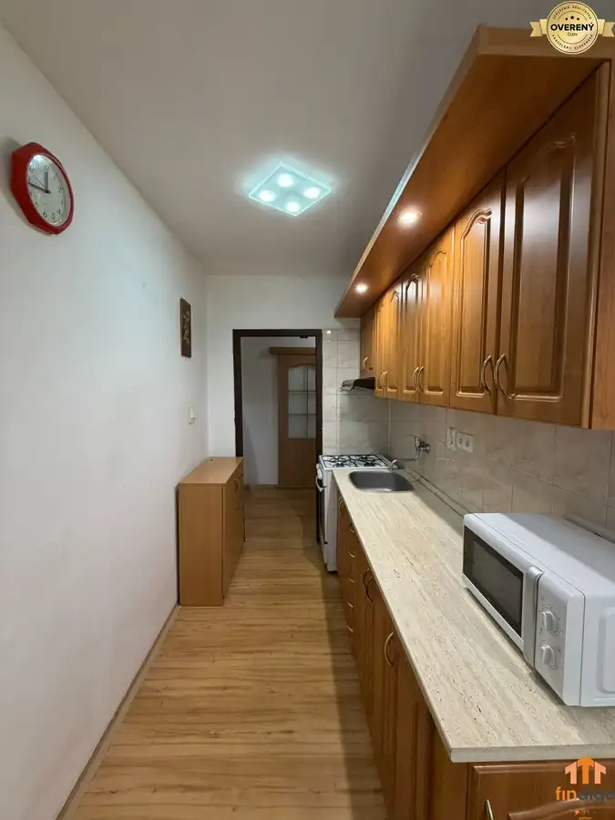
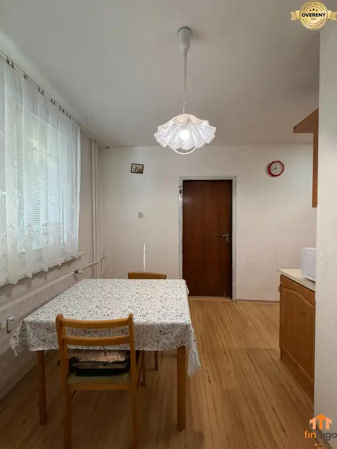
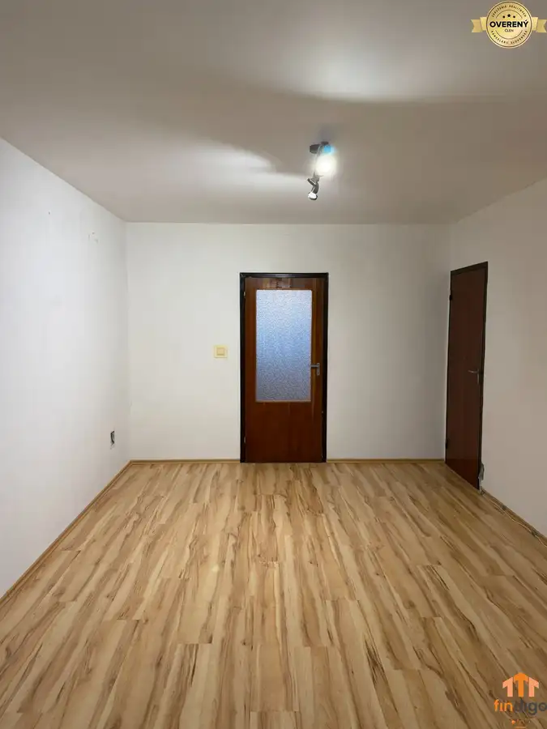
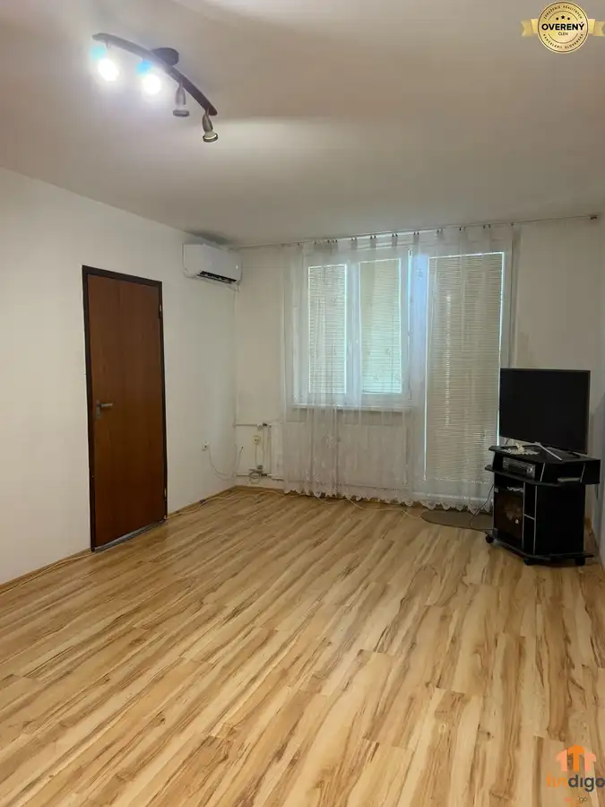
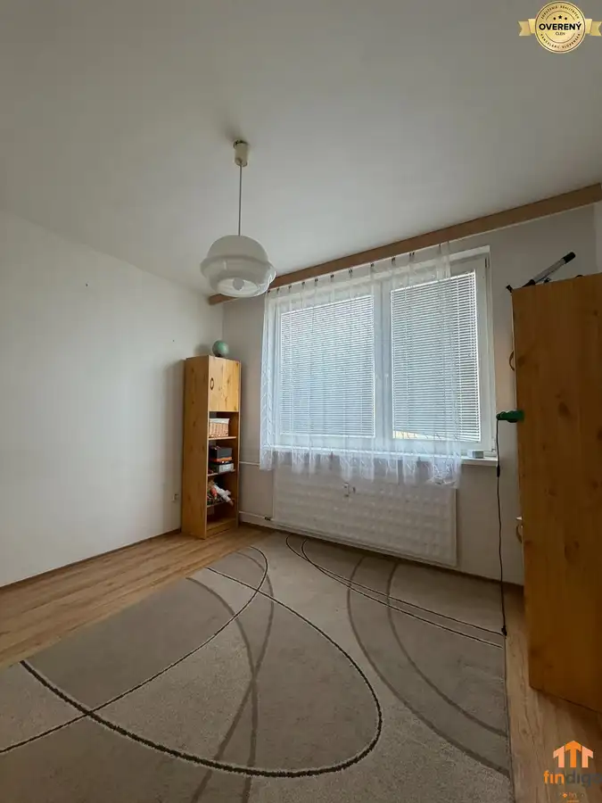
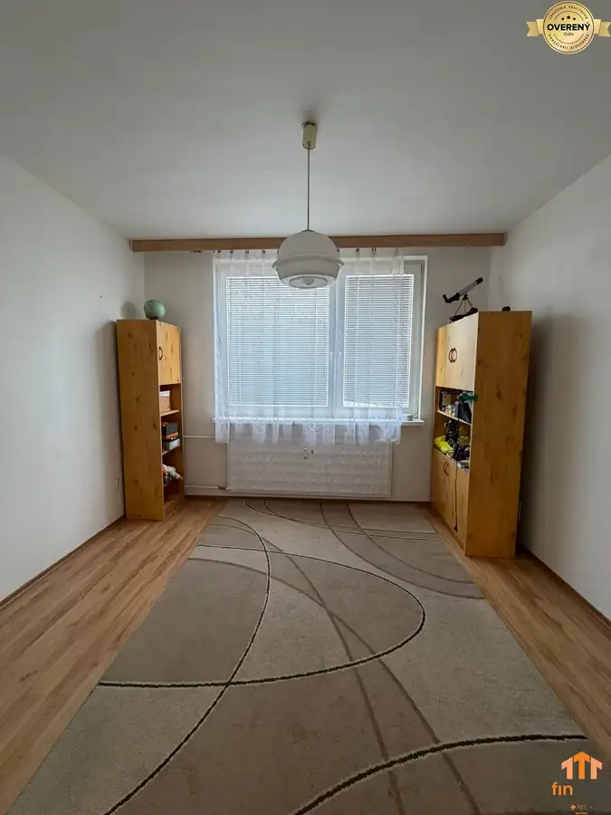
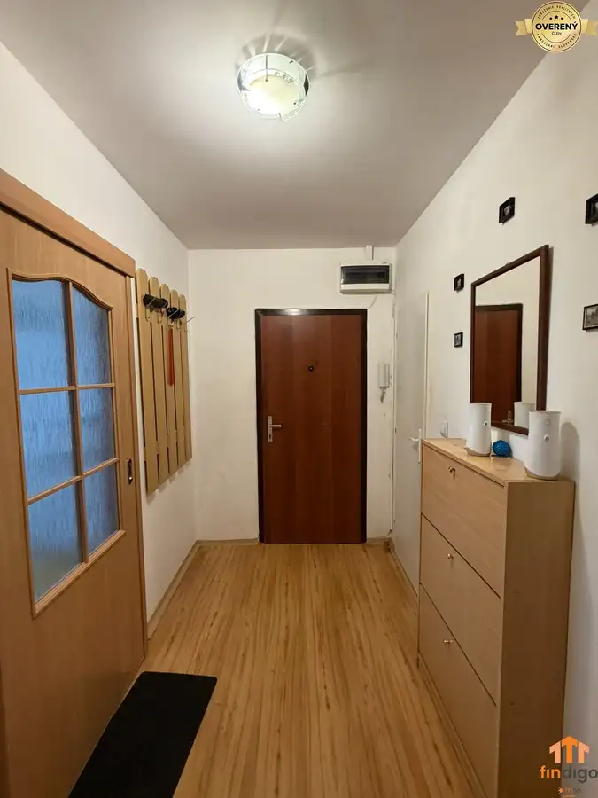

REZERVOVANÉ PREDAJ - 3-izbový veľkometrážny byt v širšom centre mesta
Šaľa









- Dispozícia3-izbový
- Plocha74 m²
- Poschodie1. z 3
- Stavčiastočne prerobený
- Vlastníctvoosobné
O nehnuteľnosti
Spoločnosť FINDIGO Vám ponúka na predaj priestranný
3-izbový byt
s výmerou 74 m², ktorý sa nachádza vo vyhľadávanej lokalite širšieho centra mesta Šaľa, na ulici Boženy Nemcovej 2.
Byt sa nachádza na 1. poschodí z celkových 3 a vďaka svojej dispozícii ponúka dostatok priestoru pre rodinu, pár aj záujemcu, ktorý si chce bývanie postupne prispôsobiť podľa vlastných predstáv.
ZÁKLADNÉ INFORMÁCIE
Podlahová plocha: 74 m²
Poschodie: 1/3
3-izbový byt
Balkón prístupný z obývacej izby
Nová klimatizácia
Pivnica
Spoločná kočikáreň
Kamerový systém v bytovom dome
STAV NEHNUTEĽNOSTI
Byt prešiel čiastočnou rekonštrukciou, v rámci ktorej boli realizované:
• plastové okná
• nová klimatizačná jednotka
• čiastočná rekonštrukcia elektrických rozvodov
• bezpečnostné vstupné dvere
• kompletne vymenené stupačky
Byt tak ponúka možnosť okamžitého využitia, ale zároveň dostatočný priestor na ďalšiu modernizáciu podľa predstáv nového majiteľa.
DISPOZÍCIA
Po vstupe do bytu sa nachádza vstupná chodba, z ktorej sú jednotlivé miestnosti prakticky dostupné.
Dispozíciu tvorí:
• vstupná chodba
• samostatné WC
• 2 samostatné izby
• priestranná obývacia izba s klimatizáciou a vstupom na balkón
• samostatná kuchyňa
• kúpeľňa so sprchovacím kútom
• špajza s možnosťou prerobenia na praktický šatník
Veľkou výhodou je najmä 74 m² podlahovej plochy, vďaka ktorej byt ponúka komfortné rozmery jednotlivých miestností a dostatok úložného priestoru.
LOKALITA – BOŽENY NEMCOVEJ, ŠAĽA
Byt sa nachádza v širšom centre mesta Šaľa, čo prináša veľmi dobrú kombináciu pokojnejšieho bývania a dostupnosti kompletnej občianskej vybavenosti.
V dostupnej vzdialenosti sa nachádzajú obchody, školy, materské školy, zdravotnícke zariadenia, lekárne, služby, reštaurácie aj možnosti športového a voľnočasového vyžitia. Centrum mesta je dostupné v priebehu niekoľkých minút.
Lokalita zároveň ponúka dobré dopravné napojenie na ostatné časti Šale a je vhodná pre rodiny s deťmi, páry aj záujemcov hľadajúcich nehnuteľnosť s dobrou dostupnosťou centra mesta.
CENA NEHNUTEĽNOSTI: 125 500€
Ak hľadáte priestranný
3-izbový byt
s balkónom, klimatizáciou a výmerou 74 m² v širšom centre Šale, táto ponuka určite stojí za pozornosť.
NÁZOR MAKLÉRA :
Tento byt vnímam ako veľmi dobrú voľbu najmä pre rodinu alebo pár, ktorí hľadajú priestranné bývanie v dobre dostupnej časti Šale. Výhodou je podlahová plocha 74 m², praktická dispozícia, balkón, klimatizácia a poloha v širšom centre mesta. Byt zároveň ponúka priestor na ďalšiu modernizáciu podľa vlastného vkusu.
Pre viac informácií alebo dohodnutie osobnej obhliadky nás neváhajte kontaktovať.
Mgr. Tomáš Vanek
Parametre
- Úžitková plocha
- 74 m²
- Poschodie
- 1/vyššie poschodie
- Počet poschodí
- 3
- Počet izieb
- 3
- Vlastníctvo
- osobné
- Stav
- čiastočne prerobený
- Status
- aktívne
- Odvoz odpadu
- áno
- Plyn
- áno
- Internet
- lokálny poskytovateľ
- Kúpeľňa
- áno
- Vykurovanie
- spoločné
- Balkón
- áno
- Lódžia
- nie
- Terasa
- nie
- Pivnica
- áno
- Garáž
- nie
- Výťah
- nie
- Parkovanie
- verejné
- Postavené z
- tehla
- Zariadenie
- čiastočne
- Zateplený objekt
- áno
- Klimatizácia
- áno
- Káblová televízia
- áno
- Energetický certifikát
- áno
- Predzáhradka
- nie
- Bezbariérový prístup
- nie
- Okná
- plastové
- Dátum zverejnenia
- 2026-09-14